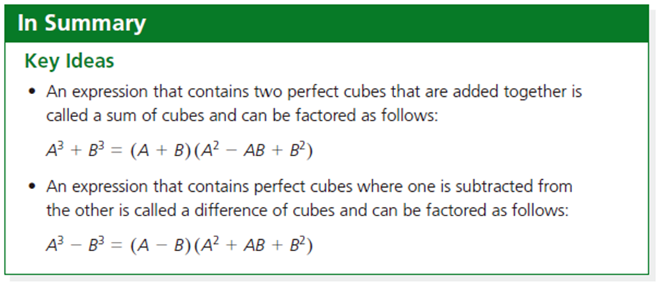

That's a Wrap!
Please review the following Learning Goals of this section and check the Success Criteria you already achieved.
Learning Goals
Students can investigate the turning points and end behaviours of polynomial functions.
Students can determine the equation of a polynomial function that describes a particular graph or situation, and vice versa.
Students can describe and perform transformations on cubic and quartic functions.
Students can use a variety of strategies to determine the quotient when one polynomial is divided by another polynomial.
Students can make connections between a polynomial function and its remainder when divided by a binomial.
Students can factor the sum and difference of cubes.
Success Criteria
You are successful in this lesson if you….
I can describe end behaviors of polynomial functions.


